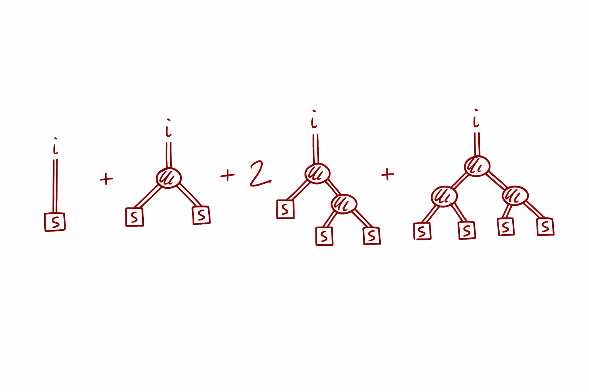

nonlinear algebra • diagrammatics • mean field
Quadratic fixed points, trees, and background fields
March 12th, 2026
 The image above is the Pomposa Abbey, a beautiful historical site in Italy near Ferrara. It is known for the invention of the modern musical notes by the friar Guido d'Arezzo,
who developed the solfège system that we still use today (do-re-mi-fa-sol-la-ti). It is also the reason why the abbey is often used as a symbol of the origins of
music theory and notation (it is for instance seen at the beginning of Lucio Dalla's music video of
Com'è profondo il mare).
I chose to start the post with this image because it captures the spirit of what I want to discuss: the interplay between old and new,
between classical and modern, between algebra and combinatorics.
The abbey here represents the fact that quadratic fixed points, what I would like to talk about here, are quite archaic objects.
The study of their perturbation expansions
is a very old and classical topic in mathematics,
with roots that go back to the very origins of algebra, yet they still hold many surprises and connections to modern physics and computation.
In fact, I don't want you to focus on the abbey in the picture, but on the tree next to it.
It really seems close to a rooted binary tree, which is exactly what we will see emerge from the perturbation expansion of a quadratic fixed point.
I wanted to write the blog post of the appropriate length so that it can be read while listening to the song, which is a personal favorite of mine
and a masterpiece of Italian music. However, it might take a bit more time than the song itself, so feel free to listen to it on repeat while reading the post :)
The image above is the Pomposa Abbey, a beautiful historical site in Italy near Ferrara. It is known for the invention of the modern musical notes by the friar Guido d'Arezzo,
who developed the solfège system that we still use today (do-re-mi-fa-sol-la-ti). It is also the reason why the abbey is often used as a symbol of the origins of
music theory and notation (it is for instance seen at the beginning of Lucio Dalla's music video of
Com'è profondo il mare).
I chose to start the post with this image because it captures the spirit of what I want to discuss: the interplay between old and new,
between classical and modern, between algebra and combinatorics.
The abbey here represents the fact that quadratic fixed points, what I would like to talk about here, are quite archaic objects.
The study of their perturbation expansions
is a very old and classical topic in mathematics,
with roots that go back to the very origins of algebra, yet they still hold many surprises and connections to modern physics and computation.
In fact, I don't want you to focus on the abbey in the picture, but on the tree next to it.
It really seems close to a rooted binary tree, which is exactly what we will see emerge from the perturbation expansion of a quadratic fixed point.
I wanted to write the blog post of the appropriate length so that it can be read while listening to the song, which is a personal favorite of mine
and a masterpiece of Italian music. However, it might take a bit more time than the song itself, so feel free to listen to it on repeat while reading the post :)
The origin of this post is that recently I've been looking at the behavior of quadratic fixed points in the context of perturbation theory and diagrammatic expansions in memristive networks, together with a student, and previously with a colleague. Since I had to clarify this expansion for the student, I thought that it would be useful to write it down in a more general way, without the memristor jargon, so that it can be useful to a wider audience. In particular, this would clarify the structure to myself as well. I thought that some of the points we uncovered were interesting and not widely appreciated, so I decided to write them down in a more general and accessible way. The goal is to discuss and study vector quadratic equations of this form:
$$ \vec x = \vec s + \chi \Omega \vec x^{\odot 2}. $$
Quick notation. The symbol $\odot$ means elementwise multiplication, so $$ \vec x^{\odot 2} = (x_1^2,\dots,x_N^2). $$ In the memristor setting I care about, the source actually lives in the projected subspace ($\vec s\in \mathrm{Range}(\Omega)$) and $\Omega$ is an orthogonal projector ($\Omega=\Omega^{\mathsf T}=\Omega^2$) enforcing Kirchhoff constraints, but you don’t need circuit details for what follows. Even with this simplification, the problem is still rich enough to illustrate the key points about branch structure, perturbation theory, and diagrammatics. Also, the equation looks deceptively simple, but it is genuinely nonlinear and nontrivial to solve. I know for instance of a full PhD thesis devoted to the study of this equation, and it is still an active area of research.
This matters here, as it is a genuinely nonlinear algebraic problem: $N$ quadratic equations in $N$ unknowns. Geometrically you can think of it as the intersection of $N$ quadratic hypersurfaces, so multiple solutions are the default. (Over the complex numbers a generic degree-$d$ system has up to $d^N$ solutions counting multiplicity; here $d=2$, so “up to $2^N$ branches” is the right mental model. Over the reals you can get fewer, and in degenerate cases you can get continua.)
The point of this post is not to solve the most general system head-on. It’s to explain a very specific phenomenon: when you try to solve a quadratic fixed point perturbatively, the algebra forces you into a diagram expansion. The coefficients aren’t random—they are sums over rooted binary trees, with Catalan numbers in the scalar case and indexed tensor contractions in the vector case.
Here is the plan for this post:- we start with the scalar quadratic and derive its rooted-tree expansion,
- see why that expansion automatically selects only the analytic root,
- recover the other root by reorganizing the expansion around a different background,
- lift the same logic to the $N$-dimensional system via a projector/eigenmode decomposition,
- and show how “many solutions” becomes “many valid diagrammatics”, one per (analytical) branch.
Note: Next week and the one after I will not have time to write, as I am traveling to the APS March Meeting in Denver and then will have some catching up to do after that. Feel free to write if you are there in person and want to meet up!
- 1. The scalar quadratic fixed point
- 2. Where is the second solution hiding?
- 3. The $N$-dimensional quadratic system (from a projector decomposition)
- 4. Tree formula: one branch as a sum over rooted binary trees
- 5. Diagrammatics around a background: solving for $C_0$ and expanding $\delta C_i$
- 6. Schwinger–Dyson viewpoint: dressing the propagator
- Takeaway
- Note added: corrections to the original version
1. The scalar quadratic fixed point
Consider the fixed-point equation
$$ C = S + \chi C^2. $$
Rearranging gives a quadratic polynomial:
$$ \chi C^2 - C + S = 0. $$
As everyone learns in school, there are two solutions:
$$ C_{\pm}(\chi) = \frac{1 \pm \sqrt{1 - 4\chi S}}{2\chi}. $$
The important point for what follows is not the formula—it’s the analytical branch structure. The two solutions behave very differently as $\chi \to 0$.
Suppose we want a small-$\chi$ expansion. Make the ansatz
$$ C(\chi) = \sum_{n\ge 0} \chi^n C^{(n)}, \qquad C^{(0)} = S. $$
Plugging into $C = S + \chi C^2$ yields the recursion
$$ C^{(n)} = \sum_{m=0}^{n-1} C^{(m)} C^{(n-1-m)}, \qquad n\ge 1. $$
The first few coefficients are:
$$ C = S + \chi S^2 + 2\chi^2 S^3 + 5\chi^3 S^4 + 14\chi^4 S^5 + \cdots $$
The integers $1,1,2,5,14,\dots$ are the Catalan numbers $\mathrm{Cat}_n=\frac{1}{n+1}\binom{2n}{n}$: they count rooted binary trees. Indeed, writing $C^{(n)}=\mathrm{Cat}_n S^{n+1}$ turns the recursion above into the Catalan recursion $\mathrm{Cat}_n=\sum_{m=0}^{n-1}\mathrm{Cat}_m\mathrm{Cat}_{n-1-m}$. We already see that at the level of a single scalar quadratic equation, trees are hidden in the perturbation expansion. Let's try to see why :) Diagrammatically, each factor of $\chi$ corresponds to adding one branching vertex, and each leaf contributes a factor of $S$. We will see this later in this post when we discuss the $N$-dimensional case.
This is the key reconciliation: the rooted-tree sum is not “the” solution. It is the solution that is analytic at $\chi=0$ and satisfies $C \to S$ as $\chi \to 0$.
Indeed, the tree series is exactly the Taylor expansion of
$$ C_{-}(\chi) = \frac{1 - \sqrt{1 - 4\chi S}}{2\chi} = S\,c(\chi S), \qquad c(z):=\sum_{n\ge0}\mathrm{Cat}_n z^n=\frac{1-\sqrt{1-4z}}{2z}, $$
because this is the branch with $C_-(\chi)\to S$ as $\chi\to 0$. The series converges for $|\chi S|<1/4$, i.e. up to the branch point where the discriminant vanishes.
2. Where is the second solution hiding?
The tree expansion we built is a perfectly ordinary Taylor series in $\chi$ around $\chi=0$, so it can only land on branches that stay finite in that limit. That is exactly what happens for $C_-(\chi)$, which satisfies $C_-(\chi)\to S$ as $\chi\to 0$.
The other root, however, is genuinely different. Since the two roots sum to $1/\chi$, $$ C_+(\chi)=\frac{1}{\chi}-C_-(\chi)=\frac{1}{\chi}-S-\chi S^2-2\chi^2S^3-\cdots \quad (\chi\to 0). $$ So it does admit an expansion—just not a power series with nonnegative powers of $\chi$. It is a Laurent expansion with a leading $1/\chi$ pole. This is why the rooted-tree/Taylor machinery “misses” it: the analytic assumption $C(\chi)=\sum_{n\ge0}\chi^n C^{(n)}$ has already excluded $C_+$.
A clean way to see the same point without solving the quadratic is to change viewpoint. Instead of expanding around the $\chi\to 0$ background $C\approx S$, expand around a different background field $C^0$:
$$ C = C^0 + \delta. $$
If $C^0$ is an exact solution of the undeformed equation, $C^0=S+\chi (C^0)^2$, then inserting $C=C^0+\delta$ gives
$$ \delta = 2\chi C^0\,\delta + \chi\,\delta^2, \qquad\text{or}\qquad (1-2\chi C^0)\,\delta = \chi\,\delta^2. $$
Around an exact root there is no constant forcing term, so the only small solution is $\delta=0$: you are already sitting on that branch. In other words, “choosing a background” is literally “choosing a branch”.
To get a nontrivial perturbation theory you then deform the problem. For instance, perturb the source $S\mapsto S+\varepsilon \Delta S$ and solve for the response $\delta(\varepsilon)$: $$ \delta = g\,\varepsilon\Delta S + \chi\, g\,\delta^2, \qquad g:=\frac{1}{1-2\chi C^0}. $$ The factor $g$ plays the role of the propagator around the chosen background. Using the explicit roots, $$ 1-2\chi C^0_\pm=\mp\sqrt{1-4\chi S}, \qquad g_\pm=\mp\frac{1}{\sqrt{1-4\chi S}}, $$ so the two branches have propagators of opposite sign, both singular at the branch point. The equation for $\delta$ has the same form as the original one with $S\to g\varepsilon\Delta S$ and $\chi\to\chi g$, so its small root is again a Catalan series—now with one factor of $g$ on every edge of every tree: $$ \delta=\sum_{n\ge0}\mathrm{Cat}_n\,(\chi g)^n\,(g\varepsilon\Delta S)^{n+1} = g\varepsilon\Delta S\; c\!\left(\frac{\chi\varepsilon\Delta S}{1-4\chi S}\right). $$ If you pick $C^0=C_-(\chi)$ you recover the familiar analytic expansion; if you pick $C^0=C_+(\chi)$ you obtain a consistent expansion on the other branch.
3. The $N$-dimensional quadratic system (from a projector decomposition)
In many problems the scalar quadratic fixed point is really a mode-reduced version of a higher-dimensional equation: you have a vector unknown $x$ (a field, a profile, a mean, …), a source $S$, and a quadratic interaction, but you only “keep” the part of the dynamics that lives in a finite-dimensional subspace. A convenient way to express that is with a projector $\Omega$.
$$ x \;=\; S \;+\; \chi\,\Omega\,\mathcal{Q}(x,x), $$
where $\mathcal{Q}(\cdot,\cdot)$ is bilinear and symmetric (the quadratic part of your model; in our case $\mathcal{Q}(u,v)=u\odot v$) and $\Omega$ is an orthogonal projector: $\Omega^2=\Omega=\Omega^{\mathsf T}$. Assume the source lives in the range of the projector, i.e. $S=\Omega S$. Then the fixed point necessarily satisfies $x=\Omega x$ as well, so the whole problem closes on the projected subspace.
Choose an orthonormal basis $\{\xi_i\}_{i=1}^N$ for $\mathrm{Range}(\Omega)$. Since $\Omega$ is an orthogonal projector, it admits the spectral/basis representation
$$ \Omega \;=\; \sum_{i=1}^N \xi_i\,\xi_i^{\mathsf T}. $$
Now expand both the unknown and the source in that basis:
$$ x = \sum_{i=1}^N C_i\,\xi_i, \qquad S = \sum_{i=1}^N S_i\,\xi_i, \qquad S_i := \xi_i^{\mathsf T} S. $$
Plug this into the fixed point equation and project onto the $i$th mode by multiplying on the left by $\xi_i^{\mathsf T}$. Using $\xi_i^{\mathsf T}\Omega=\xi_i^{\mathsf T}$ (because $\xi_i$ lies in the range of $\Omega$ and $\Omega$ is symmetric), we get
$$ C_i \;=\; S_i \;+\; \chi\,\xi_i^{\mathsf T}\,\mathcal{Q}\!\Big(\sum_{j} C_j\xi_j,\;\sum_{k} C_k\xi_k\Big). $$
Bilinearity of $\mathcal{Q}$ expands the quadratic term into pairwise couplings:
$$ \xi_i^{\mathsf T}\,\mathcal{Q}\!\Big(\sum_{j} C_j\xi_j,\;\sum_{k} C_k\xi_k\Big) \;=\; \sum_{j,k} C_j C_k\,\underbrace{\xi_i^{\mathsf T}\mathcal{Q}(\xi_j,\xi_k)}_{=:~T_{ijk}}. $$
This is where the “interaction tensor” comes from: it is just the quadratic operation expressed in the chosen mode basis. For the elementwise product $\mathcal{Q}(u,v)=u\odot v$ it is explicit,
$$ T_{ijk} \;:=\; \xi_i^{\mathsf T}\,\mathcal{Q}(\xi_j,\xi_k)=\sum_{l} \xi_{i}^{(l)} \xi_{j}^{(l)} \xi_{k}^{(l)}, $$
where $\xi_i^{(l)}$ is the $l$-th component of $\xi_i$; note that this $T$ is totally symmetric in its three indices. We arrive at the $N$ coupled quadratic fixed-point equations
$$ C_i \;=\; S_i \;+\; \chi\sum_{j,k=1}^N T_{ijk}\,C_j C_k. $$
Finally, it is convenient to repackage the tensor contraction as a bilinear map $B:\mathbb{R}^N\times\mathbb{R}^N\to\mathbb{R}^N$:
$$ (B(u,v))_i := \sum_{j,k} T_{ijk}\,u_j v_k. $$
In this notation the fixed point is the direct vector analogue of the scalar quadratic equation:
$$ C = S + \chi\,B(C,C). $$
(For $N=1$ this is the scalar equation with $\chi\to\chi T_{111}$.) Let's now discuss how to write the solution of this in a series form.
4. Tree formula: one branch as a sum over rooted binary trees
There is a precise sense in which “the perturbative branch” of $$ C = S + \chi\,B(C,C) $$ is a sum over rooted binary trees. This is not a metaphor: it is the closed-form combinatorial solution obtained by iterating the fixed point map and bookkeeping the contractions. It is also the cleanest way to see why Catalan numbers, Feynman diagrams, and branch selection all show up together.
Write the equation in components: $$ C_i = S_i + \chi \sum_{j,k} T_{ijk}\,C_j C_k, \qquad (B(u,v))_i := \sum_{j,k} T_{ijk}\,u_j v_k. $$ Assume we want the branch that is analytic at $\chi=0$ and satisfies $C(\chi)\to S$ as $\chi\to 0$. So we look for a formal power series $$ C(\chi) = \sum_{n\ge 0}\chi^n C^{(n)}, \qquad C^{(0)}=S. $$ Substituting and matching powers of $\chi$ gives the universal recursion $$ C^{(n)} = \sum_{m=0}^{n-1} B\!\big(C^{(m)},\,C^{(n-1-m)}\big), \qquad n\ge 1. \tag{$\ast$} $$ The first orders are, using $B(u,v)=B(v,u)$ to collect terms, $$ C^{(1)}=B(S,S),\qquad C^{(2)}=2\,B\big(S,B(S,S)\big),\qquad C^{(3)}=4\,B\big(S,B(S,B(S,S))\big)+B\big(B(S,S),B(S,S)\big), $$ and the coefficients $1$, $2$, $4+1=5$ are the Catalan numbers counting the underlying plane trees.
We see immediately that the equation above is a generalization of the "Catalan recursion" that we had in the scalar case, where $B(u,v)=uv$. The recursion ($\ast$) already contains the tree structure: each $C^{(n)}$ is built by taking two lower-order pieces whose total order is $n-1$, and joining them at one new quadratic vertex (the outermost $B$). Repeating this decomposition until you hit $C^{(0)}=S$ produces a binary rooted tree:

- each application of $B(\cdot,\cdot)$ is an internal vertex (a “binary split”),
- each time you stop the recursion you place a leaf, which contributes $S$,
- the order $n$ coefficient has exactly $n$ internal vertices and therefore $n+1$ leaves.
If you’ve seen QFT perturbation theory, this should ring a bell: a quadratic nonlinearity behaves like an interaction vertex, iterating the fixed point builds tree-level diagrams, and “summing the diagrams” means contracting indices (here) instead of integrating over momenta (there). The extra algebraic twist is branch structure: different solutions correspond to different backgrounds, and changing the background changes the propagator, hence the whole expansion. This is in fact the same combinatorics as tree-level Feynman diagrams: a quadratic interaction generates binary trees, and the Catalan numbers count the underlying shapes. But here we also have indices, so each tree shape comes with a sum over index assignments (contractions) dictated by $T_{ijk}$.
To make the formula explicit, fix a plane rooted binary tree $\tau$ with $n$ internal vertices (there are $\mathrm{Cat}_n$ of them; call the set $\mathcal{T}_n$). Give every edge of $\tau$ an index label in $\{1,\dots,N\}$. Let the root edge (the outgoing edge at the top) carry the fixed external index $i$. Each internal vertex $v$ has:
- one outgoing edge (toward the root) with index $a_v$,
- two incoming edges (toward the leaves) with indices $b_v$ and $c_v$.
The weight of the vertex $v$ is then the tensor entry $T_{a_v b_v c_v}$. Each leaf $\ell$ ends in a source insertion, contributing a factor $S_{a_\ell}$ where $a_\ell$ is the index on the leaf edge. Summing over all internal edge indices produces the contraction associated with that tree.
With that notation, the coefficient at order $n$ can be written compactly as a sum over trees:
$$ C_i(\chi) \;=\; \sum_{n=0}^\infty \chi^n \sum_{\tau\in\mathcal{T}_n} \;\; \sum_{\text{edge labellings }a:\, \text{root}=i} \Bigg( \prod_{v\in \mathrm{Int}(\tau)} T_{\,a_{\mathrm{out}(v)}\;a_{\mathrm{in}_1(v)}\;a_{\mathrm{in}_2(v)}} \Bigg) \Bigg( \prod_{\ell\in \mathrm{Leaves}(\tau)} S_{\,a_\ell} \Bigg). $$
Here $\mathcal{T}_n$ denotes the set of plane rooted binary trees with $n$ internal vertices, $\mathrm{Int}(\tau)$ is the set of internal vertices of $\tau$, and the labelling sum runs over all assignments of indices to the non-root edges.
If you strip away the indices and set $T_{ijk}\equiv 1$, the only remaining information is the number of tree shapes. Then $C^{(n)}$ is proportional to the Catalan number $\mathrm{Cat}_n$, recovering the familiar scalar story. The tensor $T$ is what turns “counting trees” into “contracting a diagram”. This is the type of structure that I typically love in physics: a universal combinatorial skeleton dressed with model-specific weights. Both statistical physics and quantum field theory are full of this kind of structure, and it is one of the things that makes them so powerful and beautiful.
A bonus of the recursion ($\ast$) is a convergence estimate for free: with $\|B\|$ the operator norm of the bilinear map, induction gives $\|C^{(n)}\|\le \mathrm{Cat}_n\|B\|^n\|S\|^{n+1}$, so the scalar Catalan series is a majorant and the tree sum converges absolutely for $4|\chi|\,\|B\|\,\|S\|<1$. Inside that disc it is the unique solution branch through $C=S$ at $\chi=0$ (the Jacobian there is the identity, so the implicit function theorem applies).
Also, the beauty of the formula is that it separates universals from model-specific content: the universals are the rooted binary trees (pure combinatorics), while the model-specific content sits entirely in the vertex weights $T_{ijk}$ and the leaf insertions $S_i$. This is exactly what a good diagrammatic expansion should do. As Razvan Gurau told me once, sometimes it is also worth writing something simple in a complicated way. This is one of those cases: the formula above looks complicated, but it is actually a very clean way to express the solution of the fixed point equation in a way that makes the combinatorial structure manifest. Yet, it is worth stressing that this is a particular choice of analytical branch: the one that is analytic at $\chi=0$ and satisfies $C(\chi)\to S$ as $\chi\to 0$. The other branches will have different expansions, and we will see how to get them in the next section.
5. Diagrammatics around a background: solving for $C_0$ and expanding $\delta C_i$
The small-$\chi$ tree expansion automatically lands on the branch that stays finite as $\chi\to 0$. To organize an expansion around a different branch, we pick a background and expand in fluctuations:
$$ C_i = C_0 + \delta C_i, \qquad\text{i.e.}\qquad C = C_0\,\mathbf 1 + \delta C, $$
where $C_0$ is independent of $i$ and $\mathbf 1=(1,\dots,1)^{\mathsf T}$. The idea is that $C_0$ captures the “background” part of the solution, while $\delta C_i$ captures fluctuations around it. It will be useful to introduce
$$ M_{ij} := \sum_{k} T_{ijk}, \qquad t_i := \sum_{j,k} T_{ijk}, \qquad \bar S := \frac{1}{N}\sum_{i=1}^N S_i, \qquad \bar T := \frac{1}{N}\sum_{i} t_i = \frac{1}{N}\sum_{i,j,k}T_{ijk}. $$
Since $T$ is totally symmetric, $M$ is a symmetric matrix, $B(\mathbf 1,\mathbf 1)=t$ and $B(\mathbf 1,u)=B(u,\mathbf 1)=Mu$.
Start from the full fixed point
$$ C_i = S_i + \chi \sum_{j,k=1}^N T_{ijk}\,C_j C_k. \tag{1} $$
Insert $C=C_0\mathbf 1+\delta C$ into (1) and use bilinearity and symmetry of $B$:
$$ C_0\,\mathbf 1+\delta C = S + \chi \Big[ C_0^2\, t + 2 C_0\, M\,\delta C + B(\delta C,\delta C)\Big]. \tag{2} $$
Equation (2) is exact and holds for any constant $C_0$. To fix $C_0$, average (2) over $i$ and use the standard mean-field closure (drop the fluctuation contributions in the average). This gives the scalar quadratic
$$ C_0 = \bar S + \chi\,\bar T\,C_0^2, \tag{3} $$
whose solutions are the two candidate backgrounds
$$ C_0^{\pm}(\chi)=\frac{1\pm\sqrt{\Delta}}{2\chi\,\bar T}, \qquad \Delta := 1-4\chi\,\bar T\,\bar S. \tag{4} $$
Now subtract (3), multiplied by $\mathbf 1$, from (2). This removes the constant part and leaves an exact equation for the fluctuations:
$$ \delta C = h + 2\chi C_0\, M\,\delta C + \chi\,B(\delta C,\delta C), \qquad h := (S-\bar S\,\mathbf 1) + \chi\,C_0^2\,(t-\bar T\,\mathbf 1). \tag{5} $$
The mean-field closure was only used to choose $C_0$; nothing has been dropped in (5). The effective source $h$ has zero mean, $\sum_i h_i=0$. Its second term is an $i$-dependent “mismatch” coming from the fact that the row sums $t_i=\sum_{j,k}T_{ijk}$ need not be constant in $i$. If your model/basis has $t_i$ independent of $i$ (common in symmetric reductions), that term vanishes and $h=S-\bar S\mathbf 1$. Otherwise it stays as part of the leaf weight (it is fixed once $C_0$ is chosen).
Now the linear term can be brought to the left. Define the Jacobian (linearized operator around the background $C_0\mathbf 1$):
$$ J_0 := I - 2\chi C_0\, M, \qquad (J_0)_{ij}=\delta_{ij}-2\chi C_0\sum_{k}T_{ijk}. \tag{6} $$
With this notation, the fluctuation equation is
$$ J_0\,\delta C = h + \chi\,B(\delta C,\delta C). \tag{7} $$
Now we are back to the same structural form as before: linear operator equals source plus quadratic term. If $J_0$ is invertible, define the propagator around the chosen background,
$$ G_0 := J_0^{-1}. \tag{8} $$
Then we can rewrite (7) as a fixed point for $\delta C$:
$$ \delta C = G_0\,h + \chi\,G_0\,B(\delta C,\delta C). \tag{9} $$
This is the key: the propagator $G_0$ depends on $C_0$, and $C_0$ depends on which root you chose in (4). Same diagrammatics, different weights. Explicitly, since $\chi C_0^\pm=(1\pm\sqrt\Delta)/(2\bar T)$, $$ J_0^{\pm} = I - \frac{1\pm\sqrt{\Delta}}{\bar T}\,M, \qquad J_0^-\to I,\quad J_0^+\to I-\frac{2}{\bar T}M \quad(\chi\to0). $$ As a consistency check, if $t=\bar T\mathbf 1$ then $\mathbf 1$ is an eigenvector of $M$ with eigenvalue $\bar T$ and $J_0^\pm\mathbf 1=\mp\sqrt{\Delta}\,\mathbf 1$: the uniform mode reproduces the scalar propagator of Section 2 and becomes massless at the branch point $\Delta=0$.
Iterating (9) generates a rooted-tree expansion again, but now internal lines carry $G_0$, vertices carry $T_{ijk}$, and leaves carry $h$. This is how you “access the other branch” in practice: pick $C_0^+$ instead of $C_0^-$, which changes $J_0$ and therefore changes the entire expansion.
One bookkeeping remark: $G_0$ and $h$ depend on $\chi$ through $C_0$. The expansion below is therefore an expansion in the explicit $\chi$ multiplying the vertex in (9)—equivalently, put a counting parameter $\lambda$ in front of $B$ and expand in $\lambda$— i.e. it counts vertices at fixed background. It is not a Taylor series in $\chi$ (which is precisely the point, since we want to sit on a non-analytic branch).

With (9) in hand, the tree expansion comes back in the same way as before, except that now every line carries a propagator. Writing $\delta C=\sum_n \chi^n \delta C^{(n)}$ in the sense just described, $$ \delta C^{(0)} = G_0 h, \qquad \delta C^{(n)} = G_0\sum_{m=0}^{n-1}B\big(\delta C^{(m)},\delta C^{(n-1-m)}\big), $$ so that to second order $$ \delta C = G_0 h + \chi\,G_0 B(G_0 h, G_0 h) + 2\chi^2\, G_0 B\big(G_0 h,\; G_0 B(G_0 h,G_0 h)\big) + O(\chi^3). $$ Each time you apply the quadratic term you add one vertex, and each time you stop you attach a leaf. The only new ingredient compared to the “bare” expansion is that every edge—leaf edges, internal edges and the root edge, $2n+1$ of them at order $n$—is preceded by a factor of $G_0$.
Concretely, fix a plane rooted binary tree $\tau$ with $n$ internal vertices. Label every oriented edge $e$ with an index $a(e)\in\{1,\dots,N\}$, with the root edge fixed to carry the external index $i$. In the picture each line is now drawn double, to recall that this is not a "bare" expansion: the propagator carries weight and depends on the choice of the background. Each internal vertex $v$ has two incoming edges $e_1(v),e_2(v)$ and one outgoing edge $e_{\mathrm{out}}(v)$. Then $\delta C_i$ can be written as
\[ \delta C_i(\chi) \;=\; \sum_{n\ge 0}\chi^n \sum_{\tau\in\mathcal{T}_n} \sum_{a:\,\mathrm{root}=i} \Bigg( \prod_{e\in E(\tau)} G_{0,\,a(e_{\uparrow})\,a(e_{\downarrow})} \Bigg) \Bigg( \prod_{v\in \mathrm{Int}(\tau)} T_{\,a(e_{\mathrm{out}}(v))\;a(e_1(v))\;a(e_2(v))} \Bigg) \Bigg( \prod_{\ell\in \mathrm{Leaves}(\tau)} h_{\,a(e_\ell)} \Bigg), \]
where $E(\tau)$ is the set of edges of the tree, and for each edge $e$ we think of $G_0$ as the weight that maps the index at the “downstream” end of the edge to the index at the “upstream” end (toward the root). For the root edge the upstream index is the external $i$; for a leaf edge the downstream index is contracted with $h$. (Any consistent orientation convention works; the point is: each edge contributes one $G_0$.) The same majorant argument as before gives convergence for $4|\chi|\,\|G_0\|\,\|B\|\,\|G_0 h\|<1$.
There is another equivalent (often cleaner) way to present the same expansion: dress the vertices and sources so that edges carry no weight. Since $M$ is symmetric, so are $J_0$ and $G_0$; write $$ G_0 = R\,R^{\mathsf T} \qquad \text{(think of }R=G_0^{1/2}\text{, or a Cholesky factor when }G_0\succ 0\text{; on branches where }G_0\text{ is indefinite }R\text{ may be complex).} $$ Then you can “push” half a propagator onto each adjacent vertex/leaf/root. Setting $\delta C=R\,\Phi$ in (9) and using $R^{\mathsf T}B(Ru,Rv)=\tilde B(u,v)$, one finds $$ \Phi = \tilde h + \chi\,\tilde B(\Phi,\Phi), $$ with the dressed rules:
- dress each leaf/source by $\tilde h := R^{\mathsf T}h$,
- dress the external/root leg by applying $R$ at the end,
- dress each vertex by contracting $T$ with $R$ on all three legs: $$ \tilde T_{abc} := \sum_{i,j,k} T_{ijk}\,R_{ia}\,R_{jb}\,R_{kc}, \qquad (\tilde B(u,v))_a:=\sum_{b,c}\tilde T_{abc}u_bv_c. $$ (The index placement matters when $R$ is not symmetric: it is $R^{\mathsf T}$ acting on each leg of $T$.)
With these definitions, the same tree sum can be written with unit-weight edges:
\[ \delta C(\chi) \;=\; R\left[ \sum_{n\ge 0}\chi^n \sum_{\tau\in\mathcal{T}_n} \sum_{a:\,\mathrm{root\ index\ free}} \Bigg( \prod_{v\in \mathrm{Int}(\tau)} \tilde T_{\,a(e_{\mathrm{out}}(v))\;a(e_1(v))\;a(e_2(v))} \Bigg) \Bigg( \prod_{\ell\in \mathrm{Leaves}(\tau)} \tilde h_{\,a(e_\ell)} \Bigg) \right]. \]
Same combinatorics, but different structure: either you attach $G_0$ to every line, or you absorb “square roots” of $G_0$ into the vertices/leaves/root. In diagram language this is just dressing the rules of Feynman diagrams: propagators become trivial, while sources and vertices carry the $C_0$-dependent weights.
6. Schwinger–Dyson viewpoint: dressing the propagator
We can also ask a slightly different question: how does the solution respond to changes in the source? This leads to a Schwinger–Dyson/Dyson equation for the dressed propagator (the linear response around the chosen background). Define the response matrix
$$ \mathcal{G}_{ia} := \frac{\partial C_i}{\partial S_a}. $$
The cleanest route is to differentiate the full fixed point $C=S+\chi B(C,C)$ with respect to $S_a$. Using bilinearity and symmetry of $B$,
$$ \mathcal{G}_{\cdot a} = e_a + \chi\Big(B(\mathcal{G}_{\cdot a},C)+B(C,\mathcal{G}_{\cdot a})\Big) = e_a + 2\chi\,M(C)\,\mathcal{G}_{\cdot a}, \qquad M(C)_{ij}:=\sum_k T_{ijk}C_k, \tag{SD0} $$
so that, exactly,
$$ \mathcal{G} = \big(I-2\chi\,M(C)\big)^{-1}, \tag{SD1} $$
the inverse Jacobian evaluated at the exact solution. Now split $C=C_0\mathbf 1+\delta C$. Since $M(C)$ is linear in $C$, $M(C)=C_0 M + M(\delta C)$, and therefore
$$ I-2\chi\,M(C) = J_0 - \Sigma_\delta, \qquad (\Sigma_{\delta}u)_i := 2\chi\sum_{j,k}T_{ijk}\,\delta C_k\,u_j = \chi\Big(B(u,\delta C)+B(\delta C,u)\Big)_i. \tag{SD2} $$
The operator $\Sigma_\delta$ is a (state-dependent) “self-energy”, linear in the fluctuation field. Inverting,
$$ \mathcal{G} = (J_0-\Sigma_\delta)^{-1} = (I-G_0\Sigma_{\delta})^{-1}G_0, \qquad\text{equivalently}\qquad \mathcal{G} = G_0 + G_0\,\Sigma_{\delta}\,\mathcal{G}. \tag{Dyson} $$
The structure is the point: $\mathcal{G}$ appears on both sides. The interaction feeds back into the linear response, so the bare propagator $G_0$ gets dressed by the state $\delta C$ itself, $\mathcal G = G_0+G_0\Sigma_\delta G_0+G_0\Sigma_\delta G_0\Sigma_\delta G_0+\cdots$ (convergent for $\|G_0\Sigma_\delta\|<1$).
A variant you sometimes want: hold the background $C_0$ fixed and ask only how the fluctuations respond. Differentiating (5) at fixed $C_0$, the derivative of $h$ is the projector $P:=I-\frac1N\mathbf 1\mathbf 1^{\mathsf T}$ that removes the mean, and one gets $\partial\,\delta C/\partial S = (I-G_0\Sigma_\delta)^{-1}G_0P$. The full response (Dyson) additionally contains the variation of the background, $\partial C_0/\partial S_a = \big[N(1-2\chi\bar T C_0)\big]^{-1} = \mp\big[N\sqrt{\Delta}\big]^{-1}$ on the $\pm$ branch, together with the induced changes of $G_0$ and $h$.
Either way, the dependence on the chosen branch is completely explicit: $G_0=J_0^{-1}$ depends on $C_0$, and $C_0$ depends on which root you chose. Changing the background changes the bare propagator, and therefore changes the dressed response.
Takeaway
This was a long way to say something simple: even a quadratic fixed point already has the main features people usually associate with “hard” nonlinear problems. There are typically multiple solutions (branches), and the moment you try to solve anything perturbatively you are forced to make a choice about which one you are talking about. Higher-order nonlinearities only add more of the same; the quadratic case is just the first place where you can see it cleanly.
A perturbative expansion is not neutral. Expanding in $\chi$ selects the branch that is analytic in $\chi$ (in the scalar case: the root that stays finite as $\chi\to 0$). The rooted trees are just the bookkeeping of that choice.
The background-field rewrite makes this explicit. Pick a background $C^0$ (ideally a solution), $$ C^0 = S + \chi\,B(C^0,C^0), $$ write $C=C^0+\delta$, and isolate the linearized operator $$ J = I - \chi\big(B(C^0,\cdot)+B(\cdot,C^0)\big). $$ If $J$ is invertible, $G=J^{-1}$ is the propagator around that background. Changing $C^0$ changes $J$ and $G$, so it changes the whole diagram expansion.
This is also why the pictures look like QFT. Same basic ingredients: vertices, propagators, trees. The only difference is what “summing a diagram” means: in QFT you integrate over internal momenta; here you sum over internal indices.
One last structural comment: the reduction to the $N$-dimensional system was simple because $\Omega$ was an orthogonal projector. You can loosen that assumption—use a spectral decomposition with nontrivial eigenvalues, or even allow non-symmetric/non-normal operators— but then the bookkeeping gets more delicate (left/right eigenvectors, non-orthogonal modes, sometimes Jordan structure), and tracking branches can be harder.
If you want a next step: put structure into $T_{ijk}$ (symmetries, projectors, low rank, eigenmodes). That’s where these tree sums often simplify enough to compute something explicit.
Note added: corrections to the original version
September 23rd, 2026.
A note to the reader. While turning this post into a section of a student's thesis I went back through every equation with more care than a blog post usually gets, and I also checked the whole construction numerically (random projector, Newton root-finding, finite differences). The structure and the message of the post survive intact, but the original version contained a few genuine errors and several imprecisions. I have corrected them in place rather than leaving the wrong formulas up; here is what changed, so that anyone who read (or cited) the first version knows.
- Sign of the mismatch term (old eq. 6). Subtracting the background equation from the full one produces $+\chi C_0^2\,(t_i-\bar T)$, not a minus sign as originally written. I also called this term “optional”, which it is not: it is part of the source that drives the fluctuations. It is now packaged, together with $S-\bar S$, into the effective source $h$ in eq. (5).
- The fluctuation equation is exact. The original text left the impression that the mean-field closure was an approximation carried through the whole expansion. It isn't: the closure is only used to choose the scalar $C_0$. Once $C_0$ is fixed, eq. (5) for $\delta C$ holds with nothing dropped. This is now stated explicitly.
- What “order $\chi^n$” means around a background. $G_0$ and $h$ depend on $\chi$ through $C_0$, so the expansion around $C_0^\pm$ is not a Taylor series in $\chi$; it counts the explicit vertex factors at fixed background (equivalently, an expansion in a counting parameter in front of $B$). The first version glossed over this, which is ironic since the whole point of the post is that the analytic-in-$\chi$ assumption is what selects a branch. I added a remark.
- Index placement in the dressed vertex. With $G_0=RR^{\mathsf T}$ the correct dressing is $\tilde T_{abc}=\sum_{ijk}T_{ijk}R_{ia}R_{jb}R_{kc}$, i.e. $R^{\mathsf T}$ acting on each leg. The original formula had $R_{ai}$ on the first leg and $R_{bj},R_{ck}$ on the others, which is only correct when $R$ is symmetric. The identity $R^{\mathsf T}B(Ru,Rv)=\tilde B(u,v)$ is now spelled out.
- Schwinger–Dyson section. The original derivation differentiated the fluctuation equation with respect to $S$ while treating $C_0$, $h$ and $G_0$ as independent of $S$, which they are not. The section is rewritten: differentiating the full fixed point gives the exact response $\mathcal G=(I-2\chi M(C))^{-1}=(J_0-\Sigma_\delta)^{-1}$, from which the Dyson form follows with no approximation. The old formula with the mean-removing projector $P$ is kept as what it actually is, the response of the fluctuations at fixed background.
- Smaller points. $\Omega$ has to be an orthogonal projector for the spectral representation $\sum_i\xi_i\xi_i^{\mathsf T}$ and for $\xi_i^{\mathsf T}\Omega=\xi_i^{\mathsf T}$; the explicit formula $T_{ijk}=\sum_l\xi_i^{(l)}\xi_j^{(l)}\xi_k^{(l)}$ is specific to the elementwise product and is now stated as such. Equations in Section 5 were renumbered after the rewrite, so references to the old numbering no longer apply.
I also added a few things that were missing and that a reader may find useful: the exact relation $C_+=1/\chi-C_-$; the scalar propagators $g_\pm=\mp(1-4\chi S)^{-1/2}$ and the corresponding Catalan series for the response on either branch; the third-order coefficient $C^{(3)}$ with its $4+1=5$ trees; a convergence estimate for both tree sums via the Catalan majorant (sufficient, not sharp: in my numerical tests the expansion on the $C_0^+$ branch converged well outside the bound); and the consistency check $J_0^\pm\mathbf 1=\mp\sqrt\Delta\,\mathbf 1$ for uniform row sums, which ties the vector story back to the scalar one and shows the uniform mode going massless at the branch point.
Lesson learned, once more: the diagrams are the easy part. It is the bookkeeping around them—what is exact, what is a choice, what depends on what—that deserves the care. If you spot anything else, write to me.